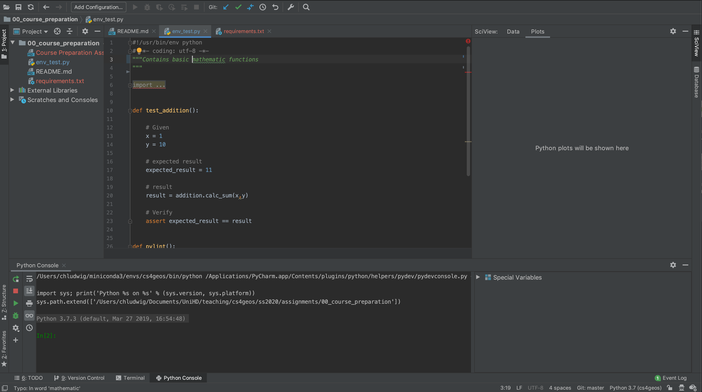

Software Setup¶
This page contains all software that we are going to need for the course. Please make sure that all software is installed and working on your computer.
Python¶
Download and install Anaconda. You may also use virtualenv or the like if you prefer, but I recommend Anaconda.
Python Environment¶
If you are using Anaconda, open the Anaconda prompt and execute the commands below to set up a new environment called geoscripting2
1. Create a new virtual Python environment.
$ conda create -n geoscripting2 python=3.7
2. Install all required Python packages listed in requirements.txt. Remember to activate your environment before.
$ conda activate geoscripting2
$ conda install --file requirements.txt
3. Check if all Python packages have been installed correctly. Start a Python interactive session and import the following Python packages
import geopandas
import sklearn
import rasterio
import requests
import scipy
import seaborn
import pytest
import pylint
If you get an ImportError, install the missing package using the conda install command.
Python IDEs¶
An IDE (Integrated Development Environments) is basically a text editor with a lot of additional functions such as syntax highlighting or profiling, which make writing code easier and faster.
PyCharm¶
During this course we will use PyCharm. I recommend applying for a free student license, which let’s you use the PyCharm Professional Edition for free. Compared to the PyCharm Community Edition (which is free for everyone), the Professional Edition provides a few more useful tools for scientific programming.
{kind=link}
Configure Python Environment in PyCharm
Open PyCharm and create a new, empty project.
Choose the advgeoscripting environment.
Open the python console and import all python packages listed above to check if they are all available.
Jupyter Notebook¶
During the course we will be working with Jupyter Notebooks. In a nutshell, a Jupyter notebook is basically a combination of an HTML page and a python script. In this way, it can display Python code alongside formatted text, figures and charts. Notebooks are used frequently within scientific computing, because it is great way of explaining what the script is doing.
Verify installation
We’ve already installed jupyter notebook using conda above. To check wether it works, start a new jupyter notebook server by executing the following command within the Anaconda prompt.
$ jupyter notebook
If you get a command not found message, make sure that the correct Python environment is activated. A new browser window should open looking something like this. The folder structure will be differently.
{kind=link}
On the top right, open the drop down menu New and create a new Jupyter Notebook by clicking on Python 3.
Verify that all python packages are available by importing all Python packages listed above.
git¶
git is a version control system which lets you track the changes you or others have made to the files of your project. If you are on Mac OS or Linux, git should already be preinstalled.
git for Windows¶
If you are on Windows, install git for Windows. Please follow this video tutorial in order to choose the right settings during installation.
Command line editor¶
git sometimes opens up an editor within the command line e.g. to write a commit message. In the course, I will use the nano editor .